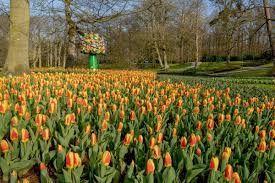
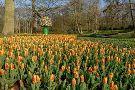

"My personal experience in plant care"
For beginner gardeners, it’s important to start with the right choice of plants. The best options are low-maintenance varieties such as aloe, lavender, or petunias. It’s essential to consider lighting, watering frequency, and soil type. Regular observation of your plants helps to spot diseases or pests in time. Don’t be afraid to experiment — mistakes in gardening are also valuable, as they lead to experience. The most important thing is love and attention to every sprout.
Gardening is not just a hobby — it’s a way to reconnect with nature. Taking care of plants teaches patience, attention to detail, and care. Even a small balcony garden can bring joy and a sense of peace. Greenery around you reduces stress, improves mood, and helps you feel more productive. You can start with simple plants like basil, mint, or succulents — they require little maintenance but create a cozy atmosphere.
 
